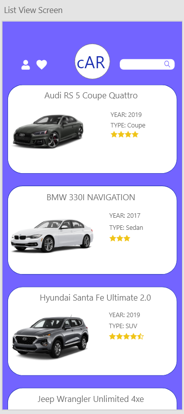
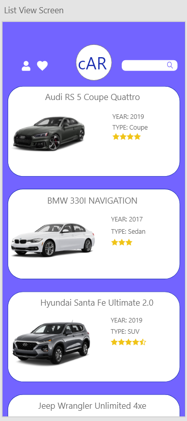
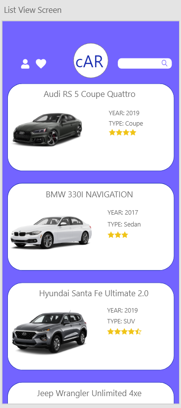

Version 1.0
This document is a description of the requirements of cAR, and contains information about features and how they work. It is meant for the client.
cAR is an app designed to let users choose a car from the cAR interface and visualize their choice in 3D by using Augmented Reality on modern smartphones. The 3D image of the car will be projected into a real life space using the rear phone camera allowing users to be able to walk around it. An additional feature is the information feature displaying the specifications of the car chosen and is linked with a listing feature. This allows the user to branch to an auto trading website which has that car listed and purchasable without the involvement of cAR.
Augmented reality (AR): Programs and devices with augmented reality allow the user to view a real-life environment with a digital augmentation superimposed on top of it. For example, the cAR app allows users to visualize a car overlaid on top of a real-life street, garage etc.
SoC: System-on-a-Chip. This is the main processing unit on modern smartphones, consisting of various components such as the CPU, GPU and radio components. Modern smartphones also have additional features such as camera processing modules and machine learning processing chips in their chip designs.
UI: User Interface.
T&C: Terms and conditions.
The rest of this document outlines the behaviours, appearance, and user interactions of cAR. Topics include hardware and software requirements as well as more details on what the application can do.
The application uses the back camera of a phone as a surface for the 3D model of a car. It is expected that the phone is compatible with ARKit and ARCore and has an internet connection.

The user is met with the welcome page following the installation of the cAR application. The welcome page has the cAR logo centred at the top, followed by information that details the app's functions in a slideshow format with a graphic specific to the text. The user can swipe left and right on the graphic to go forward/backward on the slideshow. On the bottom part of the page, there are three buttons which are the "Sign up" button, followed by the "Sign in" button, then the "Continue as guest" button.
The "Sign up" button redirects the user to a new page that includes a form to create an account for cAR. There are multiple ways for the user to create an account, including using their Facebook account, Google account, Apple ID account, or through cAR. The sign-up page includes the cAR logo centred at the same location as the welcome page and a form with four fields where the user inputs their full name, email, password, and confirmation to the password. The form is followed by a "Sign up" button. The fields have text and graphics that guide the user on where to put their login information using the app itself. Below the “Sign up” button, there are four more buttons, which redirects to the third-party account services which the user can use to create an account. If the user has a cAR account, there is another button below that redirects to the login page.
The sign-in page looks very similar to the sign-up page. The cAR logo remains present and below it are two fields, email and password, where the user fills out if they created their account using the cAR login service, and the "Sign in" button, . If the user forgot their password, they could click on the forgot password button. If the user created their cAR account through a third-party social media service, they could log in using the same buttons from the sign-up page. If the user does not have an account and wishes to create one, they can use the sign-up button at the bottom of the page, which will redirect them to the sign-up page.
Suppose the user clicks on the forget password button on the sign-in page. In that case, they are directed to the forget password page, which includes text which explains how the user can change their password. To do so, they need to input their email address used to create their cAR account, which is in a textbox, and there is a button below it to submit a password change request. There is also an arrow on the top left, which allows the user to go back to the sign-in page.
The password change request page will be accessible through the email sent to the address in which there are two text boxes, the password and confirm password. There is a button below the fields to confirm the password change, and the user is then logged in.
Once the user has logged in or entered as a guest, they are greeted with the main page. From there, the user can view the cars that are available to be seen in AR. The navigation bar is located at the top of the screen, including two buttons and a text field, alongside the cAR logo centred. The leftmost button is the profile button, which redirects to the user page. If the user entered the app through the guest option, the profile button turns them to the sign-up page. Next to the profile button is a “like” button, which redirects to the liked cars page. Right of the logo is the search bar which the user can use to search up a specific car from the library. Below the navigation bar are cards that include the cars to be viewed. The name of the vehicle is present at the top, with a photo of the car located on the card's leftmost side. The right-hand side shows the year and type of the car and a star rating of the car from other users. To view the vehicle, the user must click on the card, which acts as a button. If the user wants to purchase the car, there is also a button that directs the user to listings of the vehicle in Autotrader.
Once the car has been selected, the user enters an information page of the car. From there, a larger photo of the vehicle is present in the center, with the name of the car above it, which takes up the majority of the space. Below that includes the car's ratings, a button to view the car in AR and a heart next to it, which the user clicks on to like the car. There is a short description below alongside information about the car, including the year, type, manufacturer, number of doors and engine. If the user wants more detailed information about the car, they can click the more info button, which directs the user to the manufacturer's website that includes exact specifications of the vehicle.
Once the user clicks on the AR button, they are directed to the AR screen, where the screen becomes the viewfinder of the rear camera, and the selected car is on screen using AR. The user may have to move their phone around first to get information about the area, which allows the vehicle to show up in the best spot possible. From there, the user can play around and view their car using AR. They can also click on the speaker button on the bottom right, which plays the engine and other sounds from the car using the phone speakers, which gives a more realistic experience. On the bottom center, the user could choose to record a video that uses the phone's camera and microphones which shows the 3D model of the car. The user can save the video onto their device and share it with others on social media. Once the user is done viewing their vehicle, they can press the back button on the top left corner.
If the user clicks on the profile button from the main screen, they enter the user page of the app. From there, there are four textbox that includes their name, location, age and income. The user can change this information by clicking on an edit icon on the right of the text box. The user can sign out from cAR on this page by clicking the "Sign out" button centred at the bottom. The user can also go to the settings page by clicking the gear icon on the top right of the page, near the cAR logo, or they can go back to the main page by clicking the arrow on the top left.
The user can change important information on the settings page, such as their password, which requires them to input their old password first. They can also give cAR a rating, which redirects them to the app store. The user can go back to the user page by clicking the arrow on the top left.
To use the cAR app, a user must have a phone that is either ARKit or ARCore compatible.
iOS phones that support ARKit:
Android phones that support ARCore:
The application requires either an Android OS or iOS. With Android, the version has to be 7.0 or later (some devices will need at least 8.0) in order to be compatible with ARCore. iOS devices need at least version 11.0 with an A9 processor or later for ARKit to work. The application will be available on the Play Store or App Store, respectively.
The cAR app requires an active internet connection to find listings of a particular car from nearby sellers, display the star rating for each car listed in the app, and to save AR images and videos of a selected car. The users can then share the videos to social media apps from their gallery.
User initiated: Directly requested operation by the user as they are likely waiting, but the UI does not need to show the results immediately.
User interactive: User directly interacts with the result of an operation in real time and the UI needs to output a result immediately or the application may lag.
User interactive operations that are required consist of the user interacting with the AR feature of the car as well as navigating the application. User initiated operations would be the users logging into their accounts and using the button on the app to be transferred to the Autotrader website. A data processing support function used is Firebase, which ensures that user supplied data is correct and relevant.
Users can browse through a selection of cars that have an Augmented Reality feature. This allows them to view an AR projection of the selected car superimposed on top of the environment where the back camera of the phone is pointing, as if the car was really there. They can record videos they create directly from the app and save it to their camera roll. Users can also see a brief description of the car and a rating provided by Autotrader.com. More information can be provided by clicking a button that links to Autotrader.com. Users are able to search for a specific car add cars to their favourites.
Little technical experience is needed. The user should know how to operate a camera application on their mobile device. They are also expected to know how to use something similar to an online shopping service, such as create an account with their email, log in, access desired items, save them to a favorites list (being able to locate the save icon in the app), and log out. Unlike a shopping service, the user would be making a purchase on the Autotrader website and not on the cAR app. The user should be able to save a video to their local storage and find it again in their camera roll.
We assume that the users' devices will be compatible with ARCore and the ARKit since the app store can filter out users whose phones are not Android OS or iOS 7.0, sometimes 8.0, or later. The application also assumes users are connected to the internet to obtain access to the listings of cars and have a working rear camera to use the AR capabilities. This document assumes that cAR may change over time and that the dependencies may vary with that.
For future versions of the cAR application, storing the 3D models of the cars on the cloud would lower the memory capacity of the application. With the ability to download videos locally when needed, users can control the amount of storage this application will take. Another feature that may be implemented is a social media feed that would allow users to connect with each other and share recordings. This will require a moderation system and extended terms and conditions in order to ensure a safer social environment. An additional feature that can be implemented is to add multiple model years of the same cars so users are able to better visualize differences across model years for the same car model. Lastly, by web scraping sites such as Autotrader, we would be able to automate the search of car listings.

The logical characteristics of the user interface as shown in section 2.1.1 are as follows:
The application will run on a smartphone running Android OS or iOS and use the consolidated hardware present on the system in sync with the operating systems to perform various functions as needed. For user input and interaction, the user will use the capacitive touch displays on their mobile phones to gesture, interact and type in required inputs, and the display will react accordingly to create the outputs. The rear camera will be used to project the AR car model onto the user’s environment provided they have a large enough flat surface nearby.
The processing, storage and memory requirements of the app will be taken care of by the SoC, the flash storage and the RAM present on the device. Since mobile devices are subject to battery life, efforts will be made to reduce battery drain by reducing the processing requirements of the application.
The main software interfaces cAR will utilize are:
The primary communication interface cAR will use is the WLAN protocol to connect to the internet via the user’s Wi-Fi connection. This internet connection will allow the application to authenticate users as well as access additional application functionality such as accessing the Autotrader website. The user may also require an internet connection to share the recorded videos to external third-party apps from their photo gallery, such as social media apps, though this is dependent on the internet requirements of the third-party app. The app periodically updates data w/ the server when online. When it isn’t, the data remains stored locally until it can sync with the Cloud. Once the user reconnects, data is written onto the Cloud and vice versa. When connected to the internet, syncing occurs when there is a major change to the database.
Due to Firebase limitations, at most 100 users can use cAR at the same time. There is potential to scale to 250, 000 concurrent users if needed. It should take at most 30 seconds to perform each of these actions assuming the user has a good internet connection: to sign in, sign out, connect the user to an Autotrading website if the link is clicked, and to save the video to storage. Because the car models are pre-downloaded in the app, it should take from 5 seconds to 1 minute for the car image to be projected to real life, depending on device performance.
cAR requires three main database systems to operate. The first one is a database that stores all Registered User information, including, but not limited to, their email, usernames, passwords, and their local favourites list so they are able to access their favorite cars across multiple devices. This database will be managed in the cloud using Google Firebase, which has the necessary tools required to encrypt sensitive user information while also allowing the developers to access unencrypted data for app iteration. Firebase will manage the user authentication procedures while maintaining a login database for the same. The second database system is local to the cAR app itself, which is a table containing the following information:
The design team tools are limited to the resources they can use which are provided through Wilfrid Laurier University or those that do not go over the budget ($0.00 is the budget). Developer fees for publishing the app is not singularly tied down to the cost of this individual project.
In order to secure reliable performance of the cAR app, the user must have access to a reliable internet connection and a compatible phone with sufficient memory availability. A phone that doesn’t have enough memory can slow down the performance of the app. See Sections 2.1.3 for a list of compatible phones and 2.4 for constraints.
The ability to recover lost data in the cAR app is determined by the capabilities of the operating system of the phone that it is being run on and whether or not the user has backed up their data. For example Android phones store app data on an app server, where data is not deleted when the app itself is deleted, and can be recovered if the user has their backup settings turned on. Additionally, login checkpoints are provided through the Firebase authentication protocol.
cAR code will be modularized and GitHub will be used for version control. The creators will follow appropriate testing and common programming practices across the team.
cAR is a cross platform application, it will operate on both Android and IOS devices. You will be able to download the app off both the App Store and the Google Play store. There will not be a Windows version of this application, but you will be able to download the videos on your mobile device and view them on the computer
The appendixes are part of the requirements.
Zhenyang Ding, Muhammed Mirza, Lovette Oyewole, Kanav Kaura, Jordan Den Hoed, Omoma Eriamiantor, Hilal Safi, Hussain Phalasiya, Talal Elagha